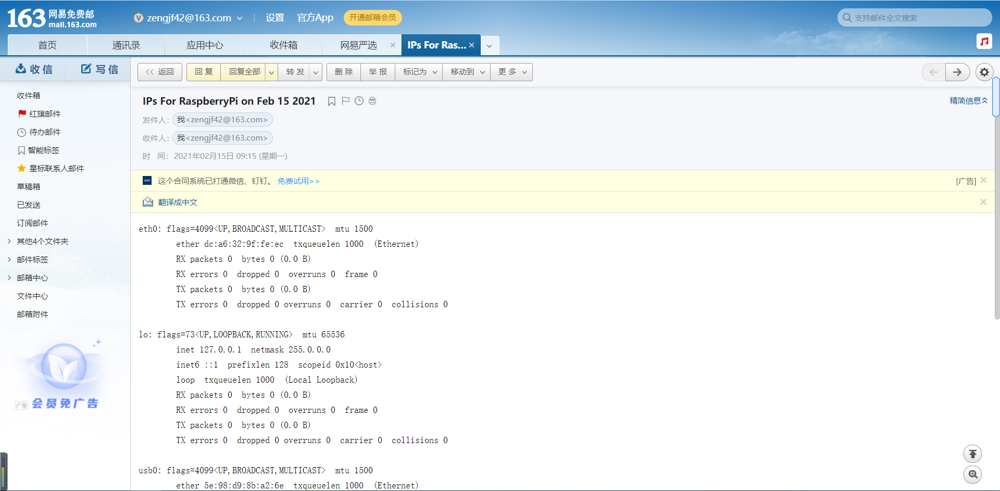

开机自动发IP信息邮件
Python3自动发邮件
163 SMTP授权密码
[设置] -> [POP3/SMTP/IMAP] -> [开启服务] -> [IMAP/SMTP服务]
automail
automail/main.py
#!/usr/bin/python3 import subprocess import smtplib from email.mime.text import MIMEText import datetime import time import os def check_ping(): hostname = "www.baidu.com" response = os.system("ping -c 1 " + hostname) # and then check the response... if response == 0: pingstatus = True else: pingstatus = False return pingstatus while True: if check_ping(): break time.sleep(1) # Change to your own account information # Account Information to = 'zengjf42@163.com' # Email to send to. mail_user = 'zengjf42@163.com' # Email to send from. mail_password = '<your smtp passwd>' # Email password. smtpserver = smtplib.SMTP('smtp.163.com') # Server to use. smtpserver.ehlo() # Says 'hello' to the server smtpserver.starttls() # Start TLS encryption smtpserver.ehlo() smtpserver.login(mail_user, mail_password) # Log in to server today = datetime.date.today() # Get current time/date arg='ifconfig -a' # Linux command to retrieve ip addresses. # Runs 'arg' in a 'hidden terminal'. p=subprocess.Popen(arg, shell=True, stdout=subprocess.PIPE) data = p.communicate() # Get data from 'p terminal'. # print(data) # get ip data ip_lines = data[0].splitlines() ips = "" for ip in ip_lines: ips += ip.decode("utf-8") + "\n" # Creates the text, subject, 'from', and 'to' of the message. msg = MIMEText(ips) msg['Subject'] = 'IPs For RaspberryPi on %s' % today.strftime('%b %d %Y') msg['From'] = mail_user msg['To'] = to # Sends the message smtpserver.sendmail(mail_user, [to], msg.as_string()) # Closes the smtp server. smtpserver.quit()
rc.local
sudo vim /etc/rc.local
#!/bin/sh -e # # rc.local # # This script is executed at the end of each multiuser runlevel. # Make sure that the script will "exit 0" on success or any other # value on error. # # In order to enable or disable this script just change the execution # bits. # # By default this script does nothing. # Print the IP address _IP=$(hostname -I) || true if [ "$_IP" ]; then printf "My IP address is %s\n" "$_IP" fi sleep 10 if [ -f "/boot/email" ]; then python3 /home/pi/zengjf/automail/main.py fi exit 0
